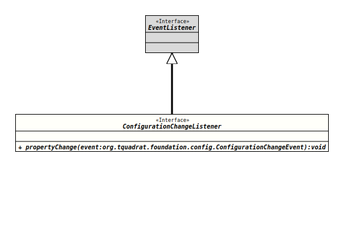

Package org.tquadrat.foundation.config
Interface ConfigurationChangeListener
- All Superinterfaces:
EventListener
- Functional Interface:
- This is a functional interface and can therefore be used as the assignment target for a lambda expression or method reference.
@ClassVersion(sourceVersion="$Id: ConfigurationChangeListener.java 1030 2022-04-06 13:42:02Z tquadrat $")
@API(status=STABLE,
since="0.0.1")
@FunctionalInterface
public interface ConfigurationChangeListener
extends EventListener
The definition of a listener for
configuration change events.
The
listener method
is called by
ConfigChangeListenerSupport.fireEvent(String, Object, Object)
each time a property of a configuration bean is changed.
- Note:
-
- The listener method is executed asynchronously through a dedicated thread.
- Author:
- Thomas Thrien (thomas.thrien@tquadrat.org)
- Version:
- $Id: ConfigurationChangeListener.java 1030 2022-04-06 13:42:02Z tquadrat $
- Since:
- 0.0.1
- UML Diagram
-

UML Diagram for "org.tquadrat.foundation.config.ConfigurationChangeListener"
{kind=link}
-
Method Summary
Modifier and TypeMethodDescriptionvoidThis method gets called when a configuration property has changed.
-
Method Details
-
propertyChange
This method gets called when a configuration property has changed.- Note:
-
- This method is executed asynchronously through a dedicated thread. The configuration bean may be still locked when this method is invoked.
- Parameters:
event- AConfigurationChangeEventobject describing the event source and the property that has changed.
-